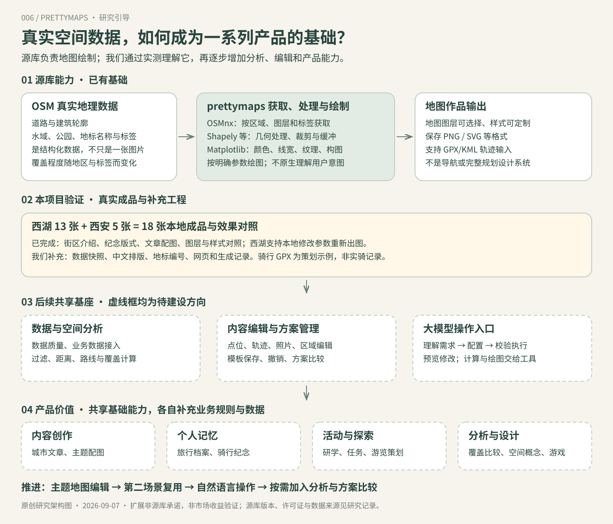
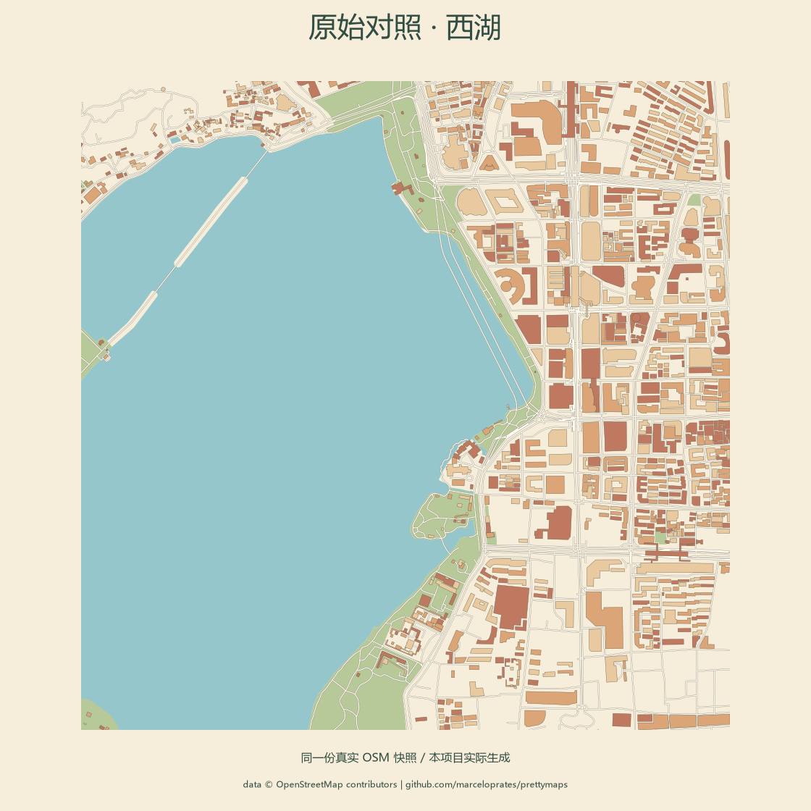
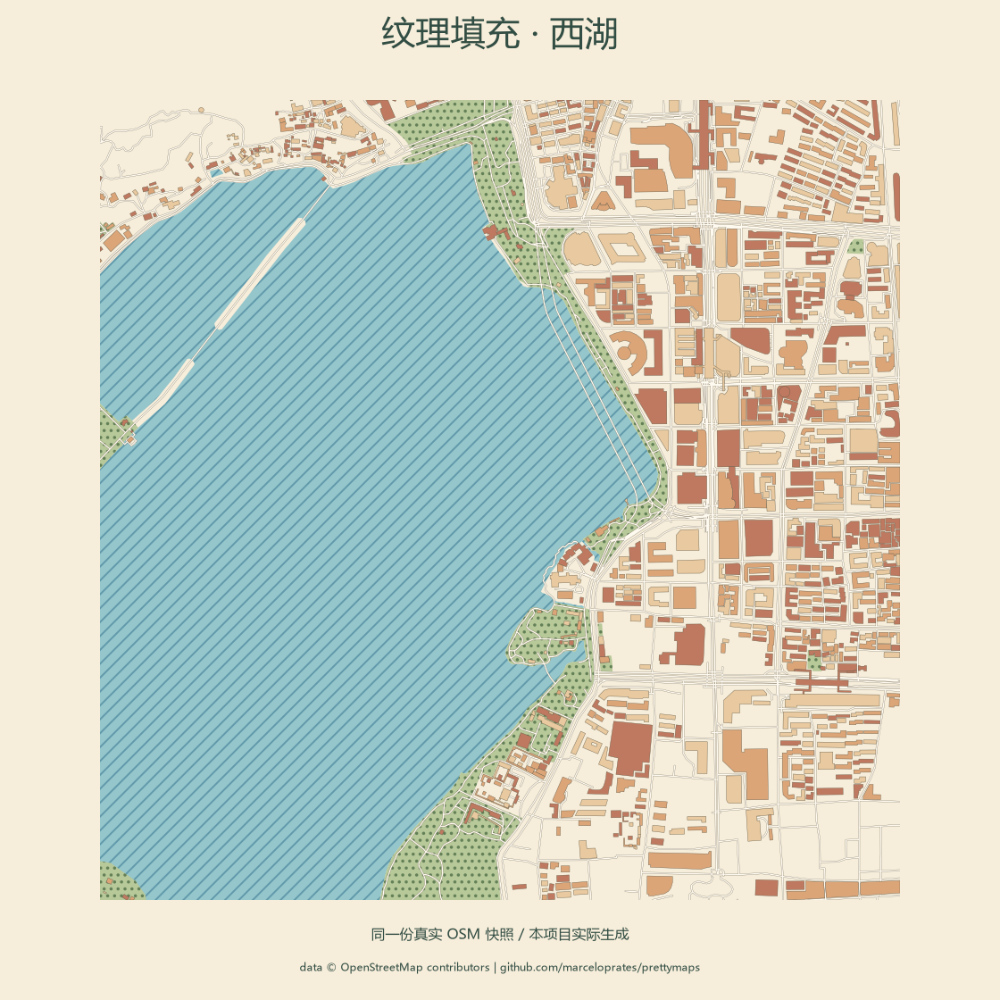
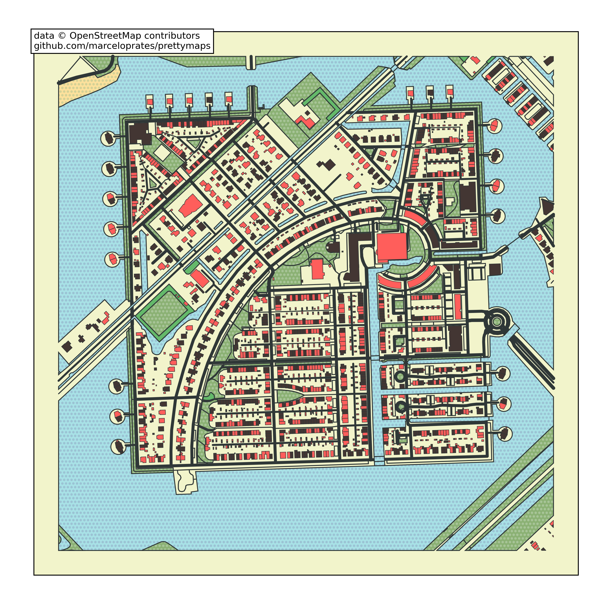
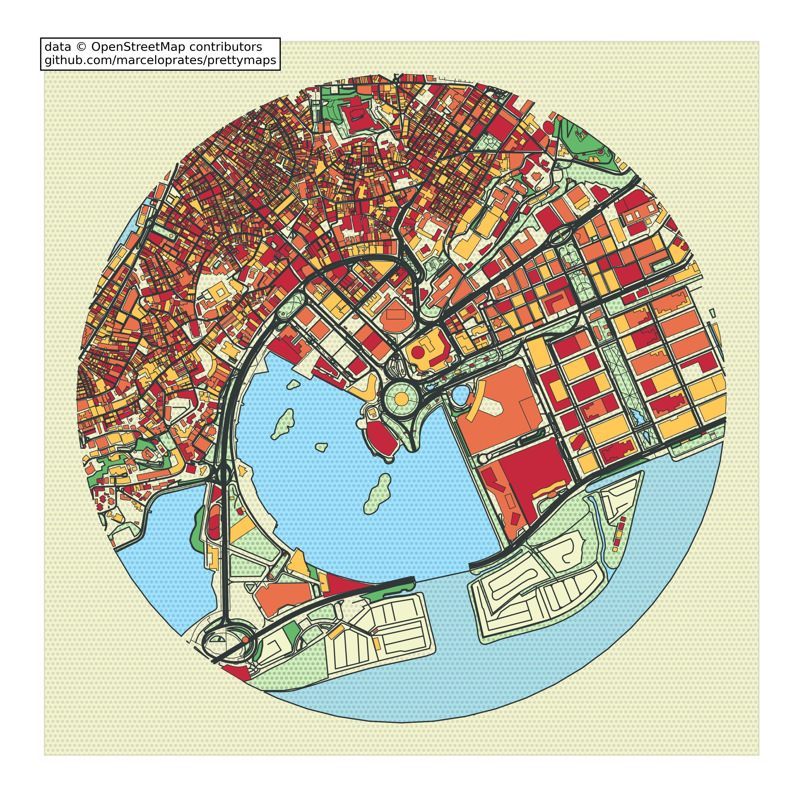

决定画哪里
地名、经纬度、OSM 对象或自定义边界；设置范围与半径。
已实测：西湖经纬度与范围其他输入形式：源码已核查看西湖实际输入 ↓
实线部分说明源库能力和本项目成果；虚线部分是待开发的共享能力与产品方向。大模型理解需求，真实数据与程序负责几何和计算。

阅读完整研究结论与扩展路线 ↗ · 点击图可放大查看
先看六类能力与同地效果对照，再亲手生成西湖作品。
最后了解它能为我们提供什么，以及下一步值得扩展什么。
街区介绍、旅行与骑行纪念、网站文章配图：五张成品，对应三种任务。
prettymaps 是可组合的二维地图绘图工具。配色只是其中一项：你还能选择数据、调整图层、改变构图、叠加信息，并取出结果继续加工。
地名、经纬度、OSM 对象或自定义边界；设置范围与半径。
已实测：西湖经纬度与范围按标签选择建筑、水域、公园、道路等地物；控制显示哪些图层。
已实测：四类图层与单层绘制填色、调色板、透明度、描边、纹理、道路宽度和叠放顺序。
已实测：配色、纹理、线稿、道路加粗圆形或区域轮廓、平移、缩放、旋转，以及多个区域组合。
已实测：圆形裁剪与原生旋转地点名称、GPX/KML 轨迹和地形阴影；可在画布上补充说明。
实测导览编号为本项目扩展图片、矢量文件、绘图仪输出；访问地理图层，保存并复用预设。
已实测：PNG、SVG、GeoJSON 复用核心是二维地图作品。实时导航、路况、路线规划、三维城市和水彩绘画不属于开箱即用能力。数据缺失不能靠换样式补齐，艺术道路宽度与随机建筑颜色也没有测量或统计含义。
左侧固定为基准图，右侧查看本项目新生成的效果。所有图来自同一份西湖真实数据；每张保留生成记录与下载文件。


观察湖面斜线与公园点纹，地理轮廓保持不变。
使用原生 hatch 与 hatch_c，为图层添加不同填充纹理。
中心 30.253° N，120.153° E。固定同一范围，便于比较不同用途和画法。
在 OpenStreetMap 对照这个地方 ↗数据量来自本次抓取的实际记录，不代表当地地物总量。
切换海报风格观察配色；查看道路单层观察路网；导览中的编号对应下方真实地点。
名称来自 OSM 快照，编号点使用地物内部代表点，不是入口位置。此图用于认识周边，不提供导航路线。
换风格：同一份地图数据换一套颜色与线条，就能生成另一张作品。换内容：关闭水域与公园，只保留道路和建筑，就能观察街区形态。加信息：在地图上补充地点编号与标题，它就能成为导览配图。
这里的重新生成会调用本机的 prettymaps 绘制代码，通常需要数秒。数据已缓存，不会每次重复请求地图服务。静态发布时仍可查看与下载已生成作品。
结合我们“研究开源项目、复现能力、做成可体验页面”的定位，这个库的价值可以分成三个层次。以下是我们的研究判断。
为研究站生成城市配图、旅行纪念图和地点介绍图。相比手工描图，地点、范围与样式可以用参数重复执行。
本次证据7 张场景成品 + 6 张能力对照图；PNG/SVG 已生成。将真实数据快照、风格参数、排版和输出记录分别保存。换样式复用数据，问题可以追溯到数据或绘图阶段。
本次证据首次成功获取并出图 22.36 秒；缓存后单张约 1–3 秒，依环境而变。先用地图表达空间，再由网页补充故事、照片与点位交互。也可以将地理图层交给后续三维实验使用。
需要补充地点交互、媒体内容、三维模型与高度；这些尚未实现。作为“地理数据绘图与素材生成模块”，服务研究展示和创作工具。现阶段不把它当作完整地图平台，也不能仅凭漂亮的图推断商业需求或城市规划结论。
以下均为扩展建议，不代表库原生提供完整产品，也不代表已经完成。工作量为相对判断。
用户得到：自由调配色、纹理、描边、道路宽度与边界，不再受几个预设限制。
复用：现有绘图参数和本地服务。新增：参数控件、预设保存、实时进度与重置。
验收：保存一种风格，重开页面后能用相同数据重现。用户得到：选择家乡或旅行地点、确定范围，再生成作品。
复用：地点解析与 OSM 查询。新增：同名地点确认、范围上限、数据缺失提示、缓存与任务队列。
验收：多种地点能成功出图，服务失败或数据为空时明确说明。用户得到：把真实轨迹、照片和日期放在同一张纪念图里。
复用：GPX/KML 读取和轨迹绘制。新增：文件校验、隐私范围、照片排版、轨迹异常检查。
验收：使用一条获准的真实轨迹，与原记录对照，避免把直线连接当作实际路线。用户得到：输入“突出湖水、建筑淡一些、改成圆形”，自动得到可编辑的设计参数。
复用：预设与参数系统。新增：语言到配置的转换、范围校验与生成记录。
验收：模型只选择有支持的参数，地图几何仍来自真实数据。用户得到：有数据依据的专题配图，或基于真实街区的交互场景。
复用：输出地理图层。新增：指标与图例、数据质量核验，或建筑高度、三维网格与渲染器。
验收：专题颜色能追溯到指标；三维缺失高度有明确标记。建议拆成独立实验。推荐顺序：风格编辑 → 任意地点与可靠生成 → 轨迹故事。专题分析与三维探索按具体需求启动。Python 生成后端需独立部署，静态研究站保留作品、能力说明和服务入口。
荷兰 · Heerhugowaard
两张图来自同一地点的官方教程。

作者示例 / OpenStreetMap 数据点选能力，查看对应的真实作品。

把水域、绿地、道路、建筑分成不同图层，分别设置颜色、描边和纹理。可以按需要保留或关闭图层。
此处切换的是不同地点的能力案例，不是同一地点的效果对比。
地名、经纬度或区域边界。
例如：家附近的一片街区。
道路、建筑、水域、绿地。
也可以叠加自己的运动轨迹。
配色、线条、纹理与范围。
保存预设，下次继续使用。
制作海报、配图或纪念地图。
还可取出地理数据继续加工。
本库主要用于静态绘图。在线搜索、实时导航、路线规划和三维交互，都需要另外实现。
本节 8 张地图均取自 prettymaps 官方教程，保留原图与图内署名。作者 Marcelo Prates；地图数据 © OpenStreetMap contributors。本节展示作者作品；页面上方的西湖实验为本项目实际生成。
研究版本：02f85870 · 上游 LICENSE：AGPL-3.0
{kind=link}
{kind=link}
{kind=link}